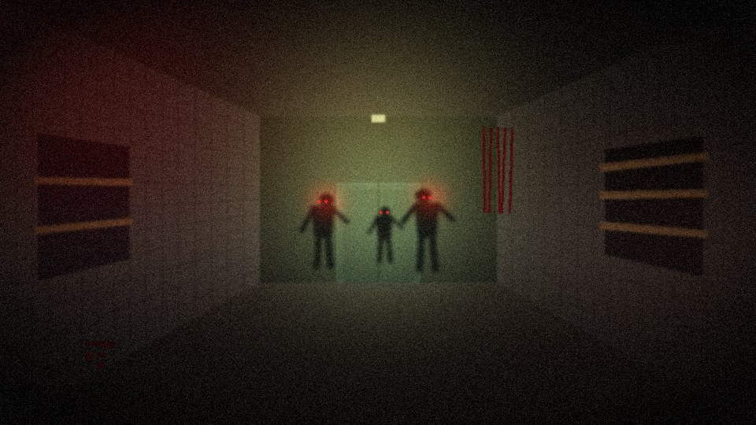
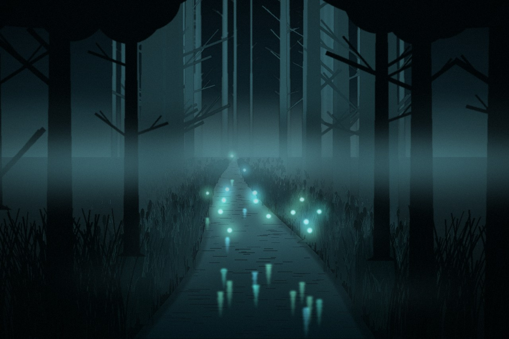

Продержись как можно дольше
Отправь код друзьям. До 4 игроков. Заходи, когда все собрались.
WASD — движение · Shift — бег · Space — прыжок · ЛКМ — стрельба · R — перезарядка · V — нож (перезарядка 0,5 с, убивает всех перед вами) · G — осколочная граната (2 за раунд) · Esc — пауза
Инвентарь: 2 слота. 1 / 2 / колёсико мыши — смена оружия. Новое оружие при полном инвентаре заменяет то, что в руках.
E (удерживать) — купить, открыть дверь, починить. F / E у окна на Nacht — чинить доски. Зажать E рядом с лежащим союзником на 3 секунды — поднять его.
Бонусы с зомби: красный MAX AMMO — полный боезапас, золотой DOUBLE POINTS — очки ×2 на 25 секунд. Цельтесь в голову!
Левый палец — стик движения (выведите палец за круг — бег) · правый палец — поворот камеры
ОГОНЬ — стрельба (держите кнопку и ведите пальцем — камера поворачивается) · ПРЫЖОК · ПЕРЕЗАР. · СМЕНА — смена оружия · ⏸ — пауза · НОЖ — удар ножом (раз в 2 с, убивает всех перед вами)
КУПИТЬ (удерживать) у Mystery Box, стен с оружием и автоматов. На Nacht также можно открывать двери и чинить окна.
Цельтесь в голову; на Verrückt зомби входят через два прохода в ограде.

NACHT DER UNTOTENБункер в два этажа с круговой лестницей в центре. Зомби лезут через окна — доски на них нужно чинить.
Проходы между комнатами открываются за 1000 (удерживать E). Начинаете в стартовой комнате с 500 очков.
12 окон на двух этажах. Зомби срывают доски по одной; удерживайте F или E у окна, чтобы вернуть их на место.
Thompson — у западной стены, 1000 (повторно — патроны за 500). Дробовик — тоже у западной стены, 1200. Mystery Box 950 появляется в центральном зале после открытия двери.
Круговая, в центре карты: подъём против часовой стрелки, вход и выход с севера. Наверху — Double Tap и Джагер Фанта.
Speed Cola 4000 — столовая, 1 этаж · Быстрое возрождение 500 / 1500 — 1 этаж, восточная стена · Double Tap 2500 — 2 этаж, северо-запад · Джагер Фанта 2000 — 2 этаж, западная стена.
Держите путь отхода к лестнице и не открывайте все двери сразу — чем меньше входов, тем проще удерживать оборону.

VERRÜCKTОткрытый двор за оградой с фонтаном и брошенной машиной. Слева и справа — два двухэтажных корпуса. Зомби входят через два прохода в ограде (игрок туда пройти не может).
Главная дверь каждого дома — 1000. Вход на 2 этаж — 2000 (сначала откройте главную дверь, потом лестницу). Сарай с Mystery Box — 1000.
У каждого корпуса 8 окон на 1 этаже, заваренных прутьями (500 HP). Починка — 250: целое окно можно укреплять раз в 30 с, сломанное — сразу. После 6 раунда у главных дверей можно построить баррикаду: постройка 1500, починка 2000 (раз в 30 с), 4000 HP.
Thompson 1000 — в левом корпусе. Дробовик 1200 — в правом, на дальней стене. Mystery Box 950 стоит в сарае к северу от правого корпуса, а после покупки входа на 2 этаж появляется и там.
На 2 этаже обоих корпусов — по рубильнику (удерживать E). Когда включены оба, в северо-восточном углу двора появляется Улучшайзер: 5500 — оружие в руках получает урон ×2 и увеличенные магазин и запас.
Speed Cola 4000 — 2 этаж левого корпуса · Double Tap 2500 — 2 этаж правого · Быстрое возрождение 500 / 1500 — у фасада левого дома · Строитель 4000 — у фасада правого дома.
Окна и баррикады — главная защита дома. Возьмите «Строителя», когда накопите очки: ремонт дешевеет на 75%, а красная обводка покажет, где зомби уже сломали защиту.
Перки покупаются у автоматов (удерживать E). Иконки купленных перков отображаются в углу экрана.
Перезарядка в два раза быстрее.
Двойной урон от оружия.
+3 удара запаса здоровья (Nacht).
Одиночная игра: один раз возрождает после смерти. Онлайн: союзников поднимаете на 60% быстрее.
Только Verrückt. Скидка 75% на починку окон и баррикад. Окно чинится целиком и сразу — без удержания и ожидания. Сломанные постройки подсвечиваются красной обводкой даже сквозь стены.